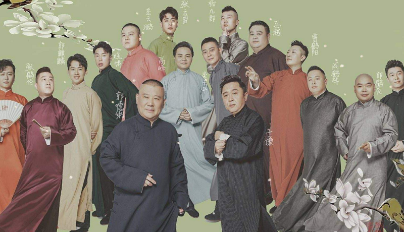

对音乐的的喜欢不止在于音乐本身，更在于音乐带来的精神上的慰藉与沉浸式的体验。
薛之谦、毛不易、张杰、焦迈奇
民谣，国风，流行
相声（Crosstalk）是一种民间说唱曲艺。它以说、学、逗、唱为形式，突出其特点。 一段相声一般由“垫话儿”——即兴的开场白；“瓢把儿”——转入正文的过渡性引子；“正活儿”——正文；“底”——掀起高潮后的结尾四部分组成。
相声艺术源于华北，流行于京津冀，普及于全国及海内外，始于明清，盛于当代。主要采用口头方式表演。
折扇、手绢、醒木
表演形式有单口相声、对口相声、群口相声等，是扎根于民间、源于生活、又深受群众欢迎的曲艺表演艺术形式。
拉丁舞，健美操
中南财经政法大学操舞大赛
我的偶像是德云社的几位相声演员，其中最喜欢的是张云雷。
因为德云社，我开始喜欢听相声，听一些小区小调亦或是京剧戏曲，从中学到了很多，也收获了很多快乐。
德云社是中国最著名的大型专业相声社团之一 ，全称北京德云社文化传播有限公司，成立于1996年。以“让相声回归剧场”，“做真正的相声”为要旨。
2011年起德云社在北展剧场开辟新形式，用方言以及话剧和相声混搭方式表演相声剧等，为观众演绎从清朝、民国到新中国成立后的各种风格流派的相声。